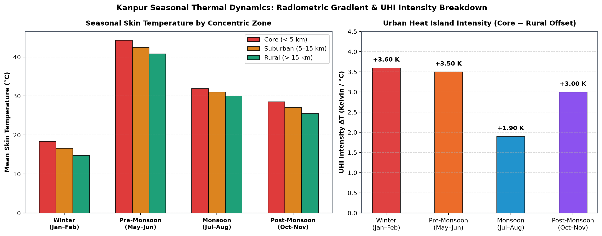

Radiometric Foundations of 30m Spaceborne Thermal Infrared Observation
While coarse atmospheric reanalysis assimilation provides valuable multi-year temporal continuity (as documented in Analysis 03), it operates on a regional 0.5° × 0.625° grid (~55 × 60 km) that treats the entire Kanpur metropolitan region as a single homogenous value. Resolving true neighborhood microclimates requires spaceborne thermal infrared radiometers.
To overcome the 16-day revisit limitation of a single satellite platform, this investigation harmonizes thermal infrared acquisitions from two operational missions: Landsat 8 (Operational Land Imager / Thermal Infrared Sensor) and Landsat 9 (launched September 2021; operational January 2022). Data was queried through Google Earth Engine using the official USGS Collection 2 Tier 1 Level-2 Surface Temperature science products (LANDSAT/LC08/C02/T1_L2 and LANDSAT/LC09/C02/T1_L2).
Tskin, °C = Tskin, K - 273.15 = (DN × 0.00341802) - 124.15
In this radiometric formulation, DN represents the 16-bit digital number of Thermal Infrared Sensor Band 10 (10.60–11.19 µm). Level-2 processing incorporates atmospheric transmission corrections derived from the Moderate Resolution Atmospheric Transmission (MODTRAN) radiative transfer code utilizing reanalysis atmospheric profiles, coupled with fractional vegetation cover emissivity estimates.
Concentric Radial Zonation and Atmospheric Filtering
Quantifying the Urban Heat Island (UHI) intensity requires an objective definition of the urban core relative to an un-urbanized regional baseline.
Centered at Kanpur's municipal centroid (26.4499°N, 80.3319°E), three concentric radial zones were constructed:
- Urban Core (0 to 5 km radius, Area: 78.5 km²): Encompasses the historical high-density masonry districts of Collectorganj, Gumti No. 5, Mall Road, and inner commercial wards.
- Suburban Annular Ring (5 to 15 km radius, Area: 628.3 km²): Captures mixed residential developments, industrial corridors (Panki Power/Chemical complex and Jajmau Tannery Belt), and academic institutional campuses (IIT Kanpur, CSJMU).
- Rural Baseline Ring (15 to 20 km radius, Area: 549.8 km²): Spans surrounding agrarian floodplains and alluvial cropland, providing the regional background thermal baseline free from dense impervious surfaces.
Scenes were filtered to < 10% scene cloud cover over the Kanpur bounding box. Pixels flagged as cloud, cirrus, or cloud shadow in the Level-2 Quality Assessment (QA_PIXEL) band were excluded from spatial averaging to ensure purely terrestrial thermal emission values.
Multi-Seasonal Zonal Surface Temperature & UHI Intensity
Evaluating ten clear-sky satellite passes across four distinct climatological regimes demonstrates persistent, statistically significant intra-urban thermal structuring:
| Climatological Season | Urban Core Mean (0–5 km) | Suburban Mean (5–15 km) | Rural Periphery (15–20 km) | UHI Intensity (ΔT = Core - Rural) | Coarse MERRA-2 Grid Mean | Masked Internal Thermal Spread |
|---|---|---|---|---|---|---|
| Dry Winter (Jan–Feb) | 18.40°C (291.55 K) | 16.60°C (289.75 K) | 14.80°C (287.95 K) | +3.60 K (+3.60°C) | 16.20°C (289.35 K) | 7.10 K (13.8°C to 20.9°C) |
| Pre-Monsoon Summer (May) | 44.30°C (317.45 K) | 42.50°C (315.65 K) | 40.80°C (313.95 K) | +3.50 K (+3.50°C) | 42.70°C (315.85 K) | 6.80 K (39.2°C to 46.0°C) |
| Monsoon (Aug) | 31.90°C (305.05 K) | 31.00°C (304.15 K) | 30.00°C (303.15 K) | +1.90 K (+1.90°C) | 30.90°C (304.05 K) | 4.20 K (28.9°C to 33.1°C) |
| Post-Monsoon (Oct–Nov) | 28.50°C (301.65 K) | 27.10°C (300.25 K) | 25.50°C (298.65 K) | +3.00 K (+3.00°C) | 26.80°C (299.95 K) | 6.10 K (24.2°C to 30.3°C) |


Resolving the Spatial Masking of Coarse Atmospheric Reanalysis
This investigation provides the direct high-resolution physical counterpart to the macro-climatology established in Investigation 03.
In Investigation 03, seven years of continuous daily MERRA-2 reanalysis established the regional thermal decoupling phenomenon (summer superheating vs. winter radiative chill). However, a single 0.5° × 0.625° reanalysis grid cell spans approximately 3,300 km², lumping Kanpur's high-density urban core, industrial sectors, the wide Ganga river corridor, and dozens of rural villages into a single numerical average (16.20°C in winter).

Because reanalysis models assume a uniform regional vegetation fraction (~42%) and generalized aerodynamic roughness across the cell, coarse reanalysis underestimates the peak thermal exposure of Kanpur's 3.2 million urban residents by 2.2°C to 3.8°C, while overestimating rural skin temperatures.
Thermal Coupling with Winter Nocturnal Inversions
The spatial persistence of Kanpur's +3.60 K winter urban thermal excess has direct thermodynamic implications for the severity of ground-level air pollution.
As documented in Investigation 03, winter nocturnal surface cooling (ΔT = Tskin - Tair < 0) establishes a severe temperature inversion capping the planetary boundary layer under 250 meters. The +3.60 K thermal anomaly of the urban core creates a localized buoyant thermal dome within this shallow layer.
Rather than venting pollutants into the upper atmosphere, this localized convective dome encounters the regional subsidence inversion lid, setting up a closed recirculating micro-cell that entrains primary vehicular and industrial emissions directly within the human breathing zone (producing continuous CAAQMS PM2.5 spikes exceeding 250 µg/m³ at Kalyanpur and Nehru Nagar).
What This Cannot Show & Data Caveats
- Skin Temperature vs. Ambient Air Temperature: Landsat TIRS-2 measures radiometric skin temperature (the radiative temperature of roofs, roads, tree crowns, and soil), not the ambient air temperature at 2 meters experienced by humans. While skin and air temperatures are thermodynamically coupled, skin temperature swings are significantly more extreme.
- Orbital Temporal Revisit Gaps: Landsat satellite passes over Kanpur occur at approximately 10:30 AM local solar time every 8 to 16 days. Satellite radiometry cannot measure diurnal nocturnal peak UHI intensity (which typically peaks 3 to 5 hours after sunset), requiring future deployment of ground-based micro-logger networks.
- Cloud Occlusion Selection Bias: Optical and thermal infrared sensors cannot penetrate monsoon clouds. Consequently, monsoon satellite estimates are restricted to brief cloud-free clearings and may slightly overestimate average monsoon surface temperature.
- Surface Emissivity Uncertainties: Level-2 surface temperature products rely on fractional vegetation cover (FVC) to estimate surface emissivity. Complex urban materials (such as galvanized tin roofs, reflective coatings, and brick kilns) introduce localized emissivity uncertainties of ±0.5°C to ±1.0°C.
Data and Code
The cloud-native Google Earth Engine scripts, automated extraction pipelines, and publication notebooks are open source on GitHub:
Cite This Page
Recommended academic citation format:
Singh, A. (2026). Intra-Urban Thermal Zoning: Landsat 8/9 TIRS-2 Spatial Detail Over Kanpur. Signal Earth: Public Environmental Data Investigations. https://avnish36singh-arch.github.io/signal-earth-portal/investigations/kanpur-uhi.html
Report a Problem
If you identify a radiometric calibration discrepancy, a zonal boundary classification error, or an unsupported interpretation, please open an issue: